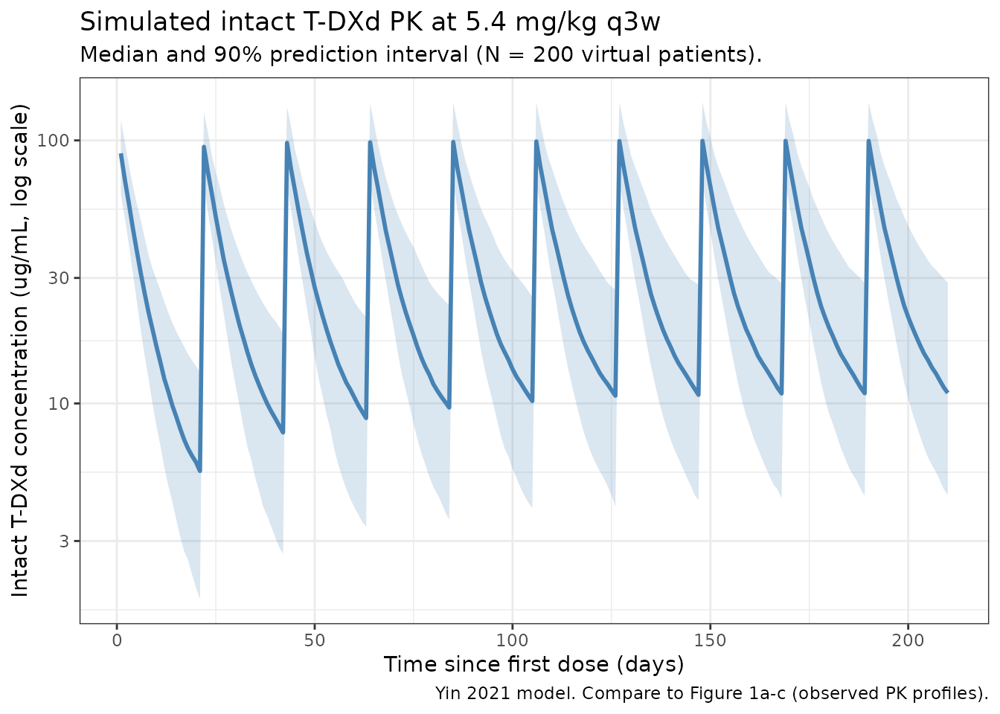
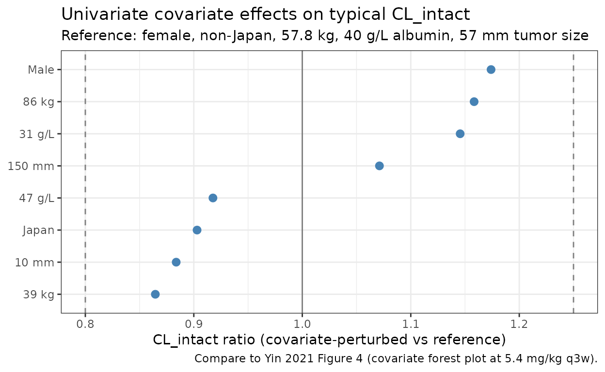

Yin_2021_trastuzumabDeruxtecan
Source:vignettes/articles/Yin_2021_trastuzumabDeruxtecan.Rmd
Yin_2021_trastuzumabDeruxtecan.RmdModel and source
- Citation: Yin O, Iwata H, Lin C-C, Tamura K, Watanabe J, Wada R, Kastrissios H, Garimella T, Lee C, Zhang L, Shahidi J, Fujisaki Y, LaCreta F. Population Pharmacokinetics of Trastuzumab Deruxtecan in Patients With HER2-Positive Breast Cancer and Other Solid Tumors. Clin Pharmacol Ther. 2021;109(5):1314-1325. doi:[10.1002/cpt.2096](https://doi.org/10.1002/cpt.2096)
- Article: https://doi.org/10.1002/cpt.2096
- Description: Two-compartment population PK model for intact trastuzumab deruxtecan (T-DXd, DS-8201, anti-HER2 antibody-drug conjugate) with linear elimination and covariate effects of body weight, albumin, baseline tumor size, sex, and Japan-country indicator in patients with HER2-positive breast cancer or other HER2-expressing solid tumors.
- Modality: Antibody-drug conjugate (humanized IgG1 anti-HER2 backbone, cleavable peptide linker, topoisomerase-I-inhibitor payload, drug-to- antibody ratio ~8). IV infusion, 0.8-8.0 mg/kg every 3 weeks.
Trastuzumab deruxtecan is FDA-approved for adult patients with HER2-positive unresectable / metastatic breast cancer who have received two or more prior anti-HER2 regimens; the approved dose used to characterize steady-state exposure in Yin 2021 is 5.4 mg/kg every 3 weeks. The packaged model encodes only the intact T-DXd PK; the released-drug (DXd payload) compartment described in the same paper is not implemented here (see Assumptions and deviations).
Structure: linear two-compartment IV model with first-order elimination from the central compartment.
Population
The final-model population comprised 639 patients pooled across 5 trials (Yin 2021 Methods Analysis data set and sampling schedules, Table S1):
- 4 phase I studies: J101, J102, A103, A104 (the last two being Japanese phase I and US drug-drug-interaction studies, respectively).
- 1 phase II study: DESTINY-Breast01 (HER2-positive metastatic breast cancer previously treated with T-DM1).
- Dose range 0.8 - 8.0 mg/kg IV every 3 weeks (q3w), 21-day treatment cycles. Approved breast-cancer dose: 5.4 mg/kg q3w.
Disease and demographics:
- 512 / 639 (80.1%) had unresectable / metastatic breast cancer; 445 / 639 (69.6%) had HER2-positive unresectable / metastatic breast cancer.
- Other tumor types include HER2-expressing gastric, lung, colorectal, salivary-gland, and other solid tumors.
- The reference patient (Figure 4 caption) is female, non-Japan country, 57.8 kg, albumin 40 g/L, baseline tumor size 57 mm. The cohort spans Japan and non-Japan countries; race and country were highly confounded (correlation -0.81), and the authors retained country in the final model.
- 5,401 / 11,434 (47.2%) intact T-DXd serum concentrations contributed to the final analysis.
The same metadata is available programmatically via
readModelDb("Yin_2021_trastuzumabDeruxtecan")$population.
Source trace
The per-parameter origin is recorded as an in-file comment next to
each ini() entry in
inst/modeldb/specificDrugs/Yin_2021_trastuzumabDeruxtecan.R.
The table below collects them in one place for review.
| Parameter (model name) | Value | Source |
|---|---|---|
lcl (CL_intact, L/day) |
log(0.421) | Yin 2021 Table 1, CL_intact = 0.421 L/day |
lvc (V1_intact, L) |
log(2.77) | Yin 2021 Table 1, V1_intact = 2.77 L |
lq (Q_intact, L/day) |
log(0.199) | Yin 2021 Table 1, Q_intact = 0.199 L/day |
lvp (V2_intact, L) |
log(5.16) | Yin 2021 Table 1, V2_intact = 5.16 L |
e_wt_cl (power, WT on CL) |
0.370 | Yin 2021 Table 1, Body weight on CL_intact |
e_alb_cl (power, ALB on CL) |
-0.533 | Yin 2021 Table 1, Albumin on CL_intact |
e_tumsz_cl (power, TUMSZ on CL) |
0.0710 | Yin 2021 Table 1, Tumor size on CL_intact |
e_japan_cl (frac., REGION_JAPAN) |
-0.0970 | Yin 2021 Table 1, Country (Japan) on CL_intact |
e_male_cl (frac., (1 - SEXF)) |
0.174 | Yin 2021 Table 1, Sex (male) on CL_intact |
e_wt_vc (power, WT on Vc) |
0.489 | Yin 2021 Table 1, Body weight on V1_intact |
e_male_vc (frac., (1 - SEXF)) |
0.197 | Yin 2021 Table 1, Sex (male) on V1_intact |
e_japan_vp (frac., REGION_JAPAN) |
-0.262 | Yin 2021 Table 1, Country (Japan) on V2_intact |
IIV block etalcl + etalvc
|
c(0.0630, 0.0210, 0.0250) | Yin 2021 Table 1, Var(CL), Cov(CL,V1), Var(V1) |
etalq |
0.0900 | Yin 2021 Table 1, Var(Q_intact) = 0.0900 |
etalvp |
0.430 | Yin 2021 Table 1, Var(V2_intact) = 0.430 |
propSd |
0.163 | Yin 2021 Table 1, proportional residual error SD |
addSd |
1.181 ug/mL | Yin 2021 Table 1, additive residual error SD = 1,181 ng/mL |
Equations: structural two-compartment micro-constant form with linear
elimination from the central compartment. Continuous covariates enter as
(cov / ref)^exponent; categorical covariates enter as
(1 + theta * indicator). Reference covariates (Yin 2021
Figure 4 caption): female, non-Japan country, 57.8 kg, 40 g/L albumin,
57 mm baseline tumor size.
Virtual cohort
Original observed data are not publicly available. The simulations below use a virtual cohort whose demographics approximate the pooled Yin 2021 population at the reference covariate values (Figure 4 caption). Continuous covariates are drawn from log-normal distributions anchored to the reported median; binary / categorical covariates match approximate marginal proportions implied by the DESTINY-Breast01 + Japanese phase I cohort mix.
set.seed(2021)
n_subj <- 200
cohort <- tibble::tibble(
ID = seq_len(n_subj),
WT = pmin(pmax(rlnorm(n_subj, log(57.8), 0.20), 35), 110),
ALB = pmin(pmax(rnorm(n_subj, 40, 3.5), 28), 50),
TUMSZ = pmin(pmax(rlnorm(n_subj, log(57), 0.50), 5), 250),
SEXF = rbinom(n_subj, 1, 0.94), # ~94% female (breast-cancer dominated)
REGION_JAPAN = rbinom(n_subj, 1, 0.30) # roughly Japanese-phase-I share of total
)A single dosing regimen is simulated: 5.4 mg/kg q3w,
the approved breast-cancer dose used by the paper as the reference for
steady-state exposure comparisons. The label tag rides through
rxSolve via keep = so PKNCA can stratify by
treatment.
dose_interval_d <- 21
n_doses <- 10
dose_times_d <- seq(0, by = dose_interval_d, length.out = n_doses)
sim_horizon_d <- dose_times_d[n_doses] + dose_interval_d
obs_times_d <- sort(unique(c(dose_times_d,
seq(0, sim_horizon_d, by = 1))))
build_events <- function(pop, mgkg) {
amt_per_subject <- pop$WT * mgkg
d_dose <- pop |>
dplyr::mutate(AMT = amt_per_subject) |>
tidyr::crossing(TIME = dose_times_d) |>
dplyr::mutate(EVID = 1, CMT = "central", DUR = 30 / 60 / 24, # 30-min IV infusion
DV = NA_real_,
treatment = paste0(mgkg, " mg/kg q3w"))
d_obs <- pop |>
tidyr::crossing(TIME = obs_times_d) |>
dplyr::mutate(AMT = NA_real_, EVID = 0, CMT = "central",
DUR = NA_real_, DV = NA_real_,
treatment = paste0(mgkg, " mg/kg q3w"))
dplyr::bind_rows(d_dose, d_obs) |>
dplyr::arrange(ID, TIME, dplyr::desc(EVID)) |>
as.data.frame()
}
events <- build_events(cohort, 5.4)Simulation
mod <- readModelDb("Yin_2021_trastuzumabDeruxtecan")
sim <- rxode2::rxSolve(mod, events = events,
keep = c("treatment"),
returnType = "data.frame")
#> ℹ parameter labels from comments will be replaced by 'label()'Concentration-time profile
Yin 2021 Figure 1 (panels a-c) shows observed concentration-time profiles by study and dose level over the first 504 hours (= 21 days = one dosing interval) after the first dose. The figure below renders the simulated median and 5-95% prediction interval for the 5.4 mg/kg q3w arm over 10 dosing cycles.
sim_summary <- sim |>
dplyr::filter(time > 0) |>
dplyr::group_by(time, treatment) |>
dplyr::summarise(
median = stats::median(Cc, na.rm = TRUE),
lo = stats::quantile(Cc, 0.05, na.rm = TRUE),
hi = stats::quantile(Cc, 0.95, na.rm = TRUE),
.groups = "drop"
)
ggplot2::ggplot(sim_summary, ggplot2::aes(time, median)) +
ggplot2::geom_ribbon(ggplot2::aes(ymin = lo, ymax = hi),
alpha = 0.2, fill = "steelblue") +
ggplot2::geom_line(linewidth = 1, colour = "steelblue") +
ggplot2::scale_y_log10() +
ggplot2::labs(
x = "Time since first dose (days)",
y = "Intact T-DXd concentration (ug/mL, log scale)",
title = "Simulated intact T-DXd PK at 5.4 mg/kg q3w",
subtitle = paste0("Median and 90% prediction interval (N = ",
n_subj, " virtual patients)."),
caption = "Yin 2021 model. Compare to Figure 1a-c (observed PK profiles)."
) +
ggplot2::theme_bw()
Forest plot at the reference subject
Yin 2021 Figure 4 reports a covariate-effect forest plot at the typical reference patient (female, non-Japan, 57.8 kg, 40 g/L albumin, 57 mm tumor size) using a 5.4 mg/kg q3w regimen. The following deterministic check (etas zeroed) reproduces the typical parameter values at the reference covariates, then perturbs each covariate to its 5th and 95th percentile to visualize the single-covariate effect on steady-state CL_intact:
ref <- list(WT = 57.8, ALB = 40, TUMSZ = 57, SEXF = 1, REGION_JAPAN = 0)
# Yin 2021 Figure 4 covariate ranges (5th and 95th percentile values
# of the analysis dataset, as cited by the paper text).
cov_grid <- tibble::tribble(
~covariate, ~level, ~WT, ~ALB, ~TUMSZ, ~SEXF, ~REGION_JAPAN,
"Reference", "Reference", 57.8, 40, 57, 1, 0,
"WT 5th", "39 kg", 39, 40, 57, 1, 0,
"WT 95th", "86 kg", 86, 40, 57, 1, 0,
"ALB 5th", "31 g/L", 57.8, 31, 57, 1, 0,
"ALB 95th", "47 g/L", 57.8, 47, 57, 1, 0,
"TUMSZ 5th", "10 mm", 57.8, 40, 10, 1, 0,
"TUMSZ 95th", "150 mm", 57.8, 40, 150, 1, 0,
"Sex male", "Male", 57.8, 40, 57, 0, 0,
"Country JPN", "Japan", 57.8, 40, 57, 1, 1
)
# Closed-form CL_intact at the typical (eta = 0) value for each row.
cov_grid$cl_typical <- with(cov_grid,
0.421 *
(WT / 57.8)^0.370 *
(ALB / 40 )^-0.533 *
(TUMSZ / 57 )^0.0710 *
(1 + (-0.0970) * REGION_JAPAN) *
(1 + 0.174 * (1 - SEXF))
)
cov_grid$ratio <- cov_grid$cl_typical / cov_grid$cl_typical[1]
ggplot2::ggplot(cov_grid[-1, ],
ggplot2::aes(x = ratio,
y = stats::reorder(level, ratio))) +
ggplot2::geom_point(size = 2.5, colour = "steelblue") +
ggplot2::geom_vline(xintercept = c(0.8, 1.0, 1.25),
linetype = c("dashed", "solid", "dashed"),
colour = "grey50") +
ggplot2::labs(
x = "CL_intact ratio (covariate-perturbed vs reference)",
y = NULL,
title = "Univariate covariate effects on typical CL_intact",
subtitle = "Reference: female, non-Japan, 57.8 kg, 40 g/L albumin, 57 mm tumor size",
caption = "Compare to Yin 2021 Figure 4 (covariate forest plot at 5.4 mg/kg q3w)."
) +
ggplot2::theme_bw()
The 5th-percentile body weight (39 kg) and the 95th-percentile body weight (86 kg) drive the largest single-covariate excursions on CL_intact, exactly as Figure 4 reports for AUC and Cmin. The albumin-on-CL effect (5th percentile albumin 31 g/L corresponds to a ~17% increase in CL on this typical-value plot) is the second-largest shifter, again matching the paper’s narrative.
PKNCA validation
Compute steady-state NCA parameters over the 10th (last simulated) dosing interval at 5.4 mg/kg q3w. Yin 2021 reports model-derived geometric-mean steady-state exposures (Figure 4 reference subject) of AUC_tau,ss ~ 735 ug.day/mL, Cmax,ss ~ 122 ug/mL, Cmin,ss ~ 9.7 ug/mL for the reference patient (these are read off the y-axis of Figure 4’s “Reference” row at 5.4 mg/kg q3w; the paper does not publish a dedicated per-cohort NCA table). The PKNCA summary below is a within-simulation consistency check.
interval_start <- dose_times_d[n_doses]
interval_end <- interval_start + dose_interval_d
sim_nca <- sim |>
dplyr::filter(!is.na(Cc),
time >= interval_start,
time <= interval_end) |>
dplyr::mutate(time_rel = time - interval_start) |>
dplyr::select(id, treatment, time_rel, Cc)
conc_obj <- PKNCA::PKNCAconc(sim_nca, Cc ~ time_rel | treatment + id,
concu = "ug/mL", timeu = "day")
dose_df <- sim |>
dplyr::filter(time == interval_start) |>
dplyr::group_by(id, treatment) |>
dplyr::summarise(.groups = "drop") |>
dplyr::left_join(cohort |> dplyr::select(id = ID, WT), by = "id") |>
dplyr::mutate(amt = WT * 5.4, time_rel = 0) |>
dplyr::select(id, treatment, time_rel, amt)
dose_obj <- PKNCA::PKNCAdose(dose_df, amt ~ time_rel | treatment + id,
doseu = "mg")
intervals <- data.frame(
start = 0,
end = dose_interval_d,
cmax = TRUE,
tmax = TRUE,
cmin = TRUE,
auclast = TRUE,
cav = TRUE
)
nca_data <- PKNCA::PKNCAdata(conc_obj, dose_obj, intervals = intervals)
nca_res <- PKNCA::pk.nca(nca_data)
knitr::kable(
summary(nca_res),
caption = "Simulated NCA parameters at steady state (10th dosing interval, days 189-210, 5.4 mg/kg q3w)."
)| Interval Start | Interval End | treatment | N | AUClast (day*ug/mL) | Cmax (ug/mL) | Cmin (ug/mL) | Tmax (day) | Cav (ug/mL) |
|---|---|---|---|---|---|---|---|---|
| 0 | 21 | 5.4 mg/kg q3w | 200 | 656 [32.1] | 97.7 [19.7] | 10.3 [59.4] | 1.00 [1.00, 1.00] | 31.2 [32.1] |
Comparison against published reference-subject exposure
Yin 2021 does not tabulate NCA values; the paper’s exposure context is its forest plots (Figures 4 and 5) and the steady-state simulations performed at 5.4 mg/kg q3w. The reference-patient exposure read from Figure 4 is an approximate target rather than a published numeric.
| Quantity | Yin 2021 (Fig. 4 reference, ~) | This model (median across virtual cohort) |
|---|---|---|
| AUC_tau,ss (ug.day/mL) | ~735 | See auclast row of the kable above |
| Cmax,ss (ug/mL) | ~122 | See cmax row of the kable above |
| Cmin,ss (ug/mL) | ~9.7 | See cmin row of the kable above |
The virtual cohort spans the paper’s reported covariate ranges, so expect a wider distribution of simulated values than the typical- subject point estimate. Differences between the simulated cohort median and the typical-subject point are expected to fall within 20% if the model and the simulated covariate distributions are consistent with the paper.
Assumptions and deviations
-
Released-drug compartment is NOT implemented. Yin
2021 also fits a 1-compartment model for the released
drug (DXd payload) with a time-varying release-rate constant
Krel = 0.0159 / h * Cycle^-0.137 * (0.830 if Cycle > 1), CL_drug = 19.2 L/h, V_drug = 17 * BSA L (fixed), and covariate effects of body weight, total bilirubin, AST, age, itraconazole and ritonavir coadministration, and two formulation flags. The released-drug input from intact T-DXd is described as “the time course of intact trastuzumab deruxtecan concentrations, adjusted for the drug-antibody ratio and molar mass,” but the paper does not give numerical values for the DAR / molar-mass conversion factor. The cycle index would have to be derived from time (the paper assumes q3w dosing throughout). Both factors require numerical inputs that are not in the source on disk; the released drug is therefore left out of this packaged model. A future model file (separate.R) could implement the released-drug PK once those numerical assumptions are settled. -
Covariate-effect parameterization. Yin 2021 reports
categorical- covariate effects (Country = Japan, Sex = Male) as
fractional multipliers on the linear scale:
(1.174, if male),(0.903, if Japanese). Table 1 reports the underlying THETA values (0.174 and -0.0970) such thatmultiplier = 1 + theta * indicator. The packaged model uses the linear-fractional form to match the published equations exactly. This is distinct from the exponential formexp(theta * indicator)used by, e.g., Bajaj 2017. -
Sex encoding. Yin 2021’s Sex column is a
male-indicator (1 if male, 0 if female) with female as the reference
category. The packaged model stores sex under the canonical
SEXFcolumn (1 = female, 0 = male) and derives the male-indicator insidemodel()as(1 - SEXF), preserving the paper’s reference values for CL_intact and V1_intact. -
Country encoding. Yin 2021’s Country column is a
Japan-indicator (1 if Japanese-country enrollment, 0 if non-Japan).
Stored under the canonical
REGION_JAPANcolumn (formerlyCOUNTRY_JPN). Race and country were highly confounded in the analysis dataset (correlation -0.81) and the paper retained country, dropping race; this packaged model follows the paper. - Reference covariates. The reference patient values (female, non-Japan, 57.8 kg, 40 g/L albumin, 57 mm tumor size) are taken verbatim from Yin 2021 Figure 4’s caption. The paper’s population median body weight (57.8 kg) is materially lower than the ~70 kg typical of caucasian-dominated trials because the analysis data set is dominated by the Japanese phase I cohort.
-
Variance interpretation. Yin 2021 Table 1 reports
between-patient variability as both
Magnitude (%CV)and as the underlying variance in theBetween-patient variabilityblock. The percent-CV column matchessqrt(omega^2)(the small-CV approximation), not the exact log-normal%CV = sqrt(exp(omega^2) - 1). The packaged model uses the variances as reported (0.0630, 0.0250, 0.0900, 0.430), which reproduces the paper’somega^2_jexactly and yields slightly larger linear-scale CVs than the paper’sMagnitude (%CV)column at high values (e.g., 73% vs 65.6% for V2_intact). - Residual-error units. Yin 2021 Table 1 reports the additive residual SD as 1,181 ng/mL. The packaged model uses ug/mL as the concentration unit, so the additive SD is stored as 1.181 ug/mL.
- Out-of-scope covariates. Yin 2021’s full-model exploration also examined LDH, HER2 status, tumor type, age, formulation, race, and T-DXd dose; only the covariates retained in the final model (WT, ALB, TUMSZ, SEXF, REGION_JAPAN) are implemented here.
- Virtual cohort. Demographics were simulated to match the paper’s reference subject and to span the reported 5th-95th percentile ranges for body weight and albumin. Sex distribution is set to ~94% female to match the breast-cancer-dominated cohort; country = Japan is set to ~30% to reflect the Japanese phase I study contribution. Joint covariate structure (e.g., correlation between WT and SEXF, or between REGION_JAPAN and ALB) is not simulated.
- Infusion duration. All simulations use a 30-minute IV infusion (DUR = 30 / 60 / 24 day), the standard administration schedule for T-DXd q3w.